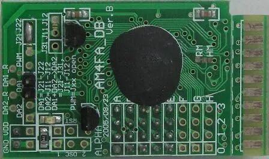
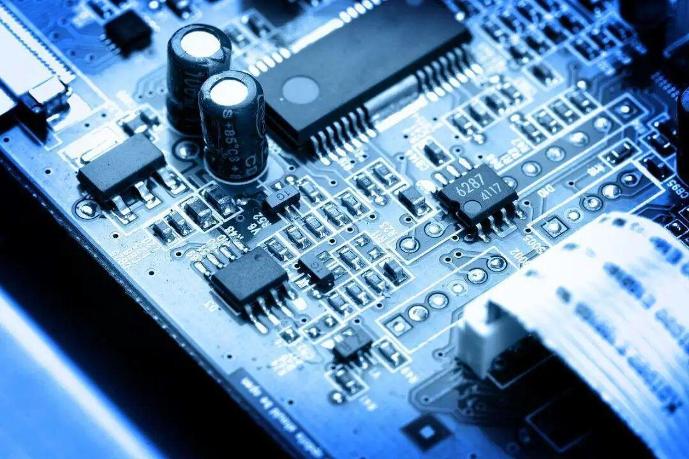
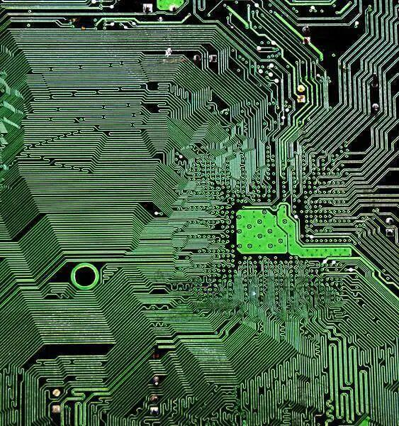
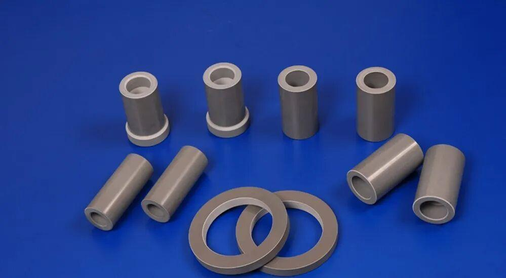
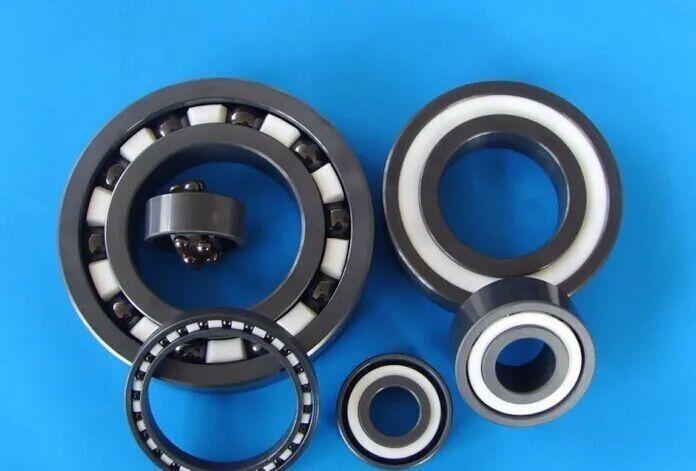
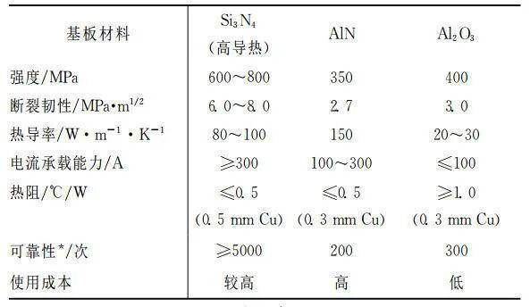
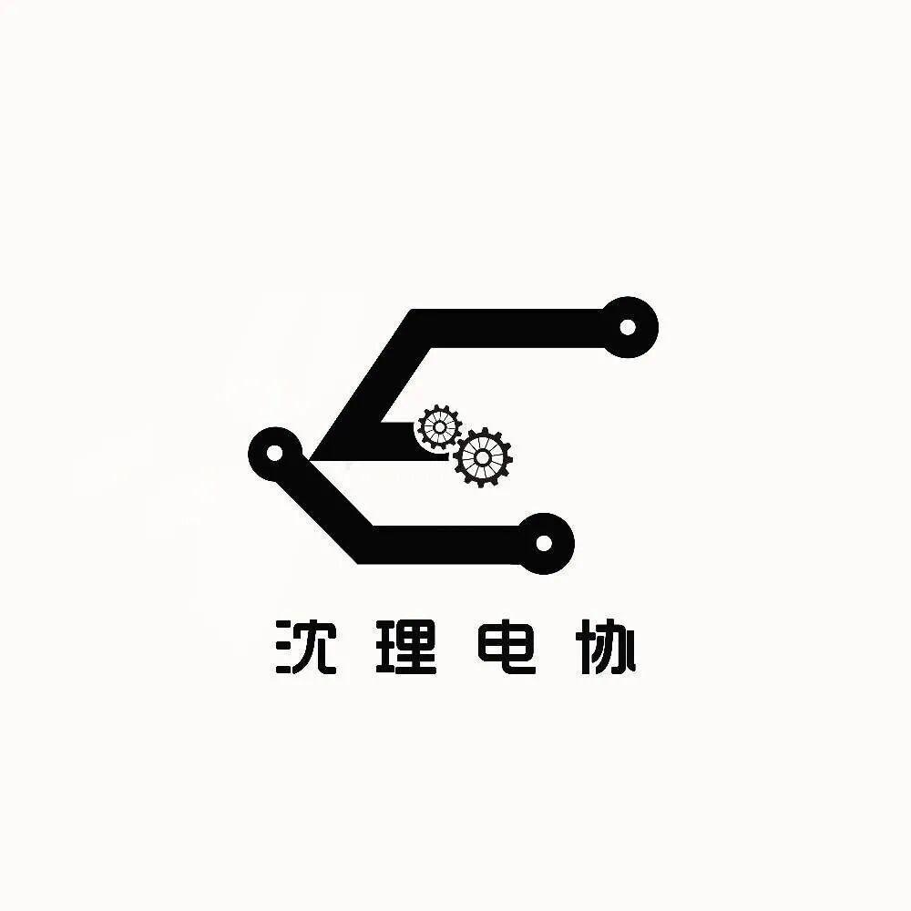
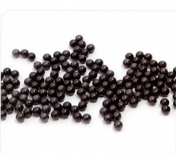

优异的高温工程材料——氮化硅陶瓷



你知道氮化硅陶瓷吗？
近年来，半导体器件沿着大功率化、高频化、集成化的方向迅猛发展。半导体器件工作产生的热量是引起半导体器件失效的关键因素，而绝缘基板的导热性是影响整体半导体器件散热的关键。
此外，在电动汽车、高铁等领域，半导体器件使用过程中往往要面临颠簸、震动等复杂的力学环境，这对所用材料的力学可靠性提出了严苛的要求。氮化硅（Si3N4）陶瓷是综合性能最好的结构陶瓷材料。


Si3N4的介绍
氮化硅，固体的Si3N4是原子晶体，是空间立体网状结构，每个Si和周围4个N共用电子对，每个N和周围3个Si共用电子对，空间几何能力比较强的话你可以自己想象一下......大体上是和金刚石中的碳原子结构类似，不过是六面体又称六方晶体。
主料为氮化硅的轴承


Si3N4陶瓷及其性能特点
Si3N4具有３种结晶结构，分别是α相、β相和γ相。其中α相和β相是Si3N4最常见的形态，均为六方结构。Si3N4陶瓷具有硬度大、强度高、热膨胀系数小、高温蠕变小、抗氧化性能好、热腐蚀性能好、摩擦系数小等诸多优异性能，是综合性能最好的结构陶瓷材料。与其他陶瓷材料相比，Si3N4陶瓷材料具有明显优势，尤其是在高温条件下氮化硅陶瓷材料表现出的耐高温性能、对金属的化学惰性、超高的硬度和断裂韧性等力学性能。

这是陶瓷基板材料物理学性能对比。从表中可以看出，Si3N4陶瓷的抗弯强度、断裂韧性都可达到AlN的２倍以上，特别是在材料可靠性上，Si3N4陶瓷具有其他二者无法比拟的优势。

氮化硅陶瓷的研究现状
对于Si3N4以及Sialon陶瓷烧结体，现已提供了一种不用形成复合材料而保持单一状态的、利用超塑性进行成型的工艺，并提供了一种根据该工艺成型出的烧结体。把相对密度在95%以上、线密度对于烧结体的二维横截面上的50μm的长度在120～250范围内的氮化硅及Sialon烧结体；在1300～1700℃的温度下通过拉伸或压缩作用使其在小于10-1/秒的应变速率下发生塑性形变从而进行成型。成型后的烧结体特别在常温下具有优异的机械性能。
Si3N4 陶瓷是一种重要的结构材料，它是一种超硬物质，本身具有润滑性，并且耐磨损；除氢氟酸外，它不与其他无机酸反应，抗腐蚀能力强，高温时抗氧化. 而且它还能抵抗冷热冲击，在空气中加热到1,000℃以上，急剧冷却再急剧加热，也不会碎裂. 正是由于Si3N4 陶瓷具有如此优异的特性，人们常常利用它来制造轴承、气轮机叶片、机械密封环、永久性模具等机械构件. 如果用耐高温而且不易传热的氮化硅陶瓷来制造发动机部件的受热面，不仅可以提高柴油机质量，节省燃料，而且能够提高热效率. 中国及美国、日本等国家都已研制出了这种柴油机。


编辑|孙恩汇
配图 |百度百科
文字 | 百度百科
扫码关注电协 了解更多小知识